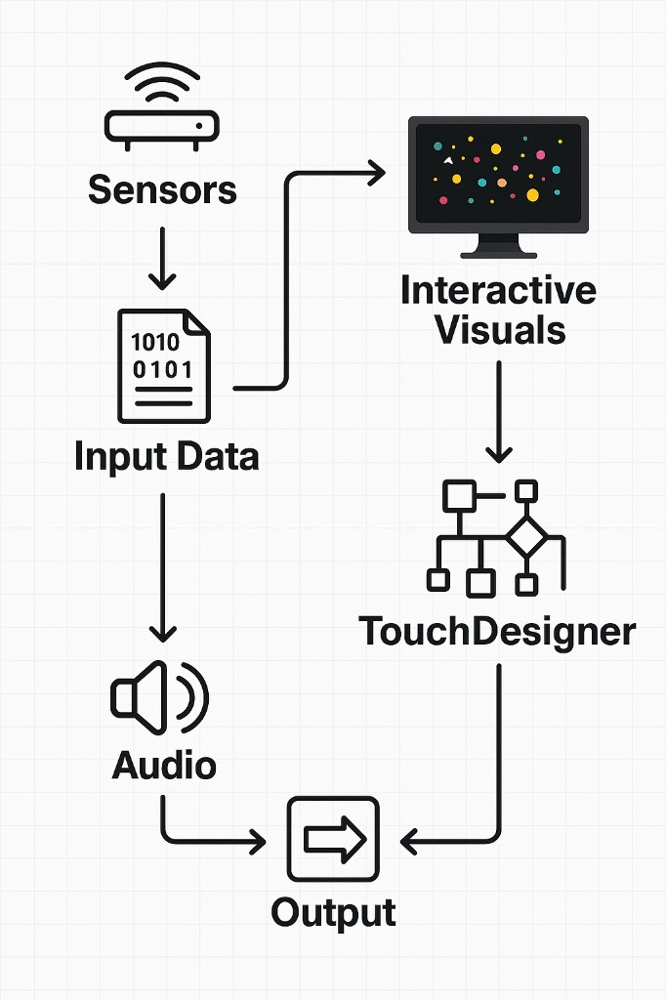
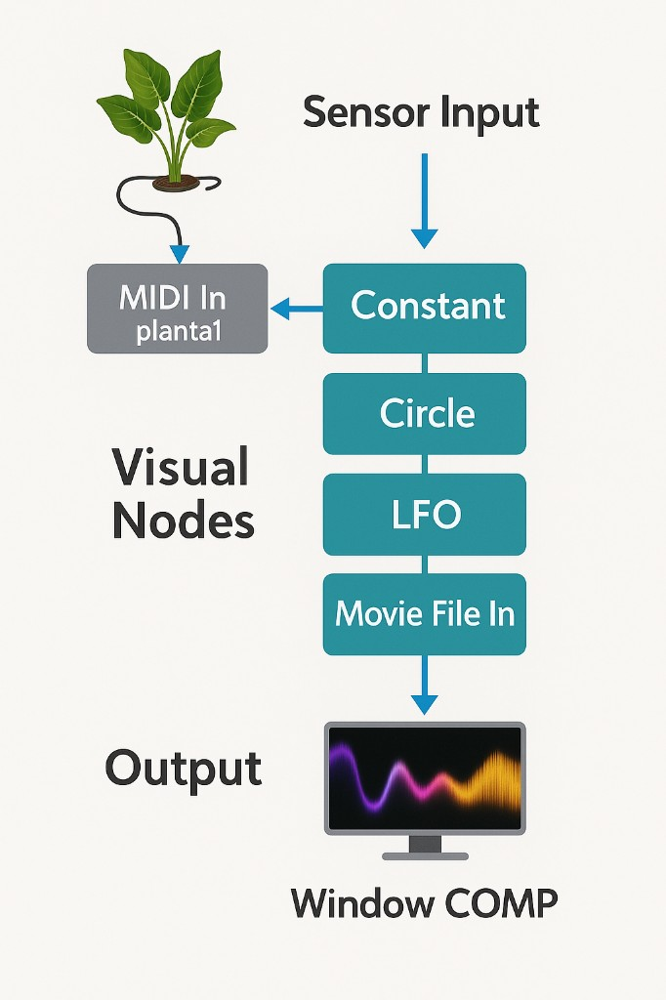
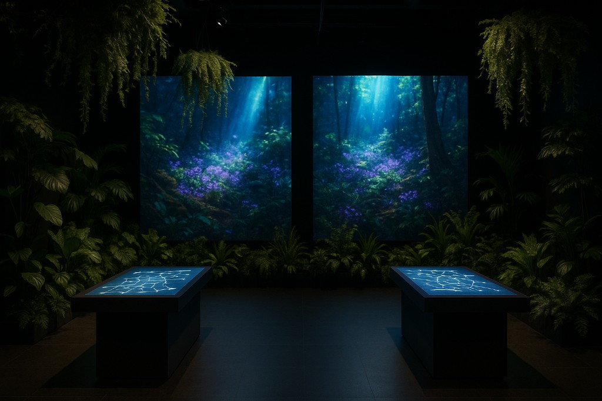
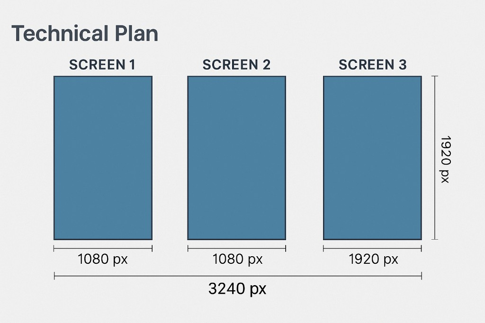
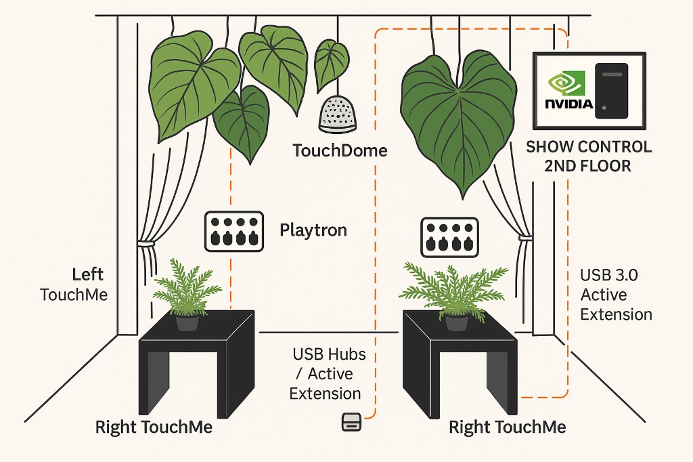
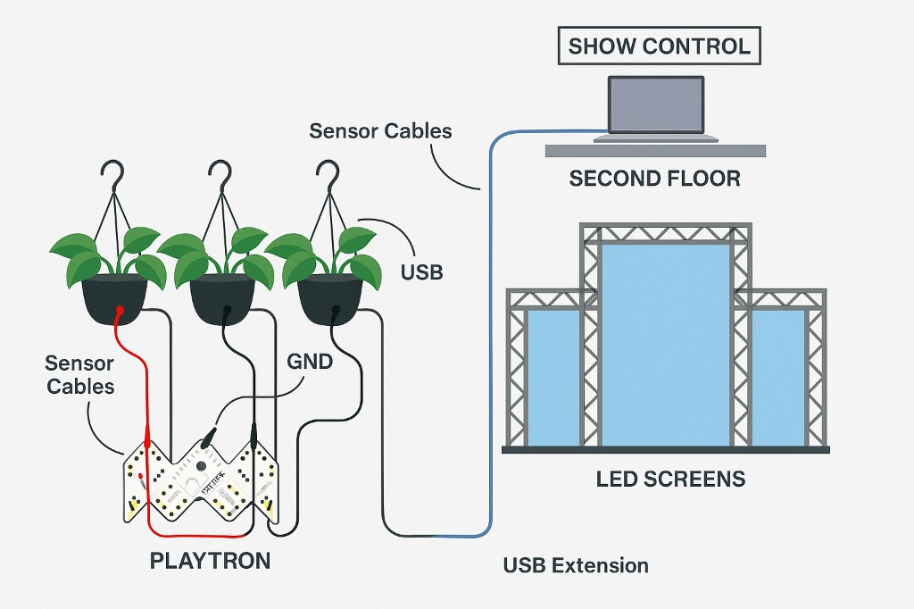

Biointerface
An interactive installation at the intersection of AI, biological data and digital art — where living plants become capacitive instruments and the audience's touch drives a real-time, multi-screen environment.

Where biology meets the machine.
Biointerface explores the bridge between artificial intelligence, biological data and digital art. Living plants are wired as capacitive sensors, so a visitor's touch — and their own physiology — becomes the input that shapes the visuals.
A real-time engine turns that data into a responsive, ever-changing environment projected across a multi-screen canvas — a living dialogue between human, plant and machine.
From touch to visuals, in real time.


How it was built.

Concept & sensing
Defining the bridge between biological data and digital art — and choosing how to sense it: capacitive touch on living plants, Kinect and camera input.
Sensor system & hardware
Wiring plants as capacitive inputs through Playtron / Bare Conductive boards, with USB active extensions running back to a second-floor show-control machine.
Real-time engine
A TouchDesigner network — Constant, Circle, LFO, Movie File In — plus a GLSL shader content switcher with noise and feedback, all mapped from sensor and MIDI/OSC data.
Multi-screen mapping
Compositing onto a three-screen canvas (3240 × 1920 px) and routing to LED screens, main screen, floor particles and the AI station via NDI / Spout.
Install & show control
On-site assembly of the touch tables and hanging plants, second-floor show control, calibration and testing with real audiences.
Screens, sensors and wiring.



The stack behind Biointerface.
Inside the installation.


A living, responsive system.
Made by Andata Lab.
- Studio
- Andata Lab
- Disciplines
- Interactive art · Real-time systems
- Engineering
- TouchDesigner · Sensors · Show control
Have a space that should come alive?
We design and build immersive, interactive experiences for museums, brands and cultural spaces.
Start a project →